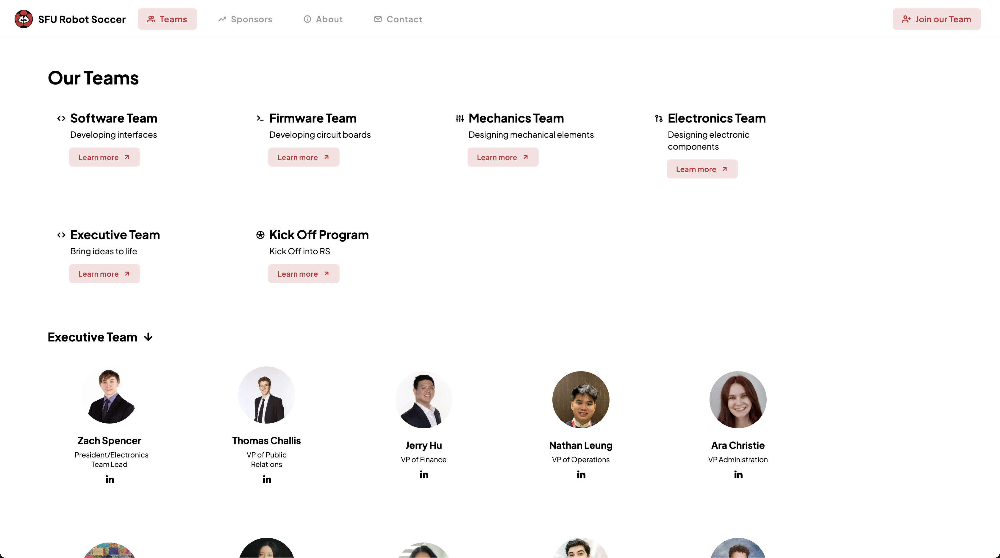
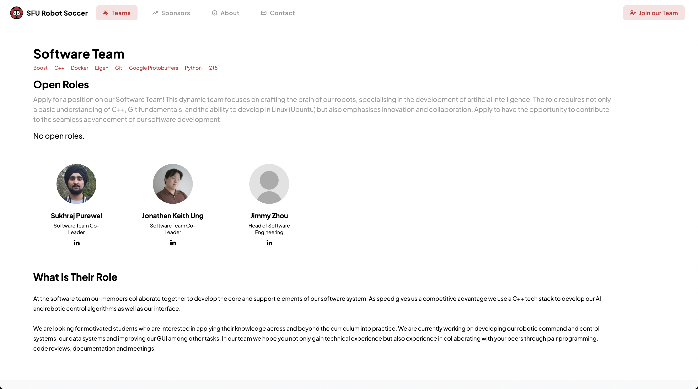

photo gallery



a website designed and developed for the sfu robot soccer club.
i led the redesign and development of the sfu robot soccer club website, working closely with the business team and VPs to create a more engaging and accessible platform. as the lead developer, i managed a team of three developers to implement a mobile-first, responsive design that significantly improved the user experience for both club members and visitors.
the new website features a streamlined information architecture that makes it easier for visitors to learn about the club's activities, achievements, and upcoming events. working with stakeholders, we implemented modern design principles and enhanced accessibility features to ensure the site serves all users effectively. the redesigned platform has resulted in improved engagement metrics and better serves as a digital hub for the club's community.
leading the redesign of the sfu robot soccer website has been an invaluable experience in team leadership and collaborative development. managing a team of developers taught me the importance of clear communication, effective task delegation, and maintaining consistent coding standards. working directly with club stakeholders helped me understand how to balance technical requirements with user needs, ensuring that our solutions met both technical and organizational goals.
this project strengthened my skills in responsive design and modern web development practices. implementing a mobile-first approach taught me the importance of adaptable layouts and progressive enhancement. collaborating with the business team improved my understanding of project management and stakeholder communication. the experience of leading a development team enhanced my abilities in code review, mentoring, and maintaining project momentum while ensuring high-quality deliverables.